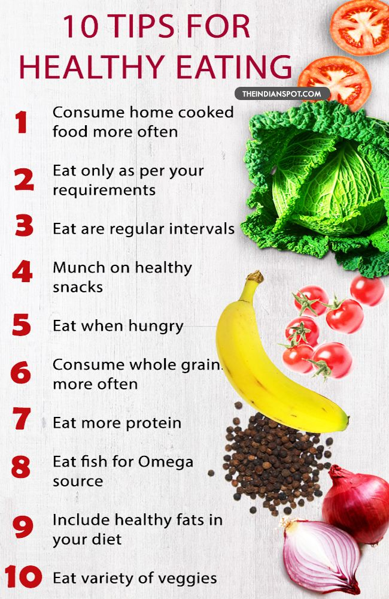

How healthy eating can greatly impact your life

Eating healthy can improve your life by improving your mood and overall mental health. A well-balanced diet provides all of the: energy you need to keep active throughout the day nutrients you need for growth and repair, helping you to stay strong and healthy and help to prevent diet-related illness, such as some cancers Keeping active and eating a healthy balanced diet can also help you to maintain a healthy weight. Deficiencies in some key nutrients such as vitamin A, B, C and E, and zinc, iron and selenium can weaken parts of your immune system. A diet rich in calcium keeps your teeth and bones strong and can help to slow bone loss (osteoporosis) associated with getting older. Calcium is usually associated with dairy products, but you can also get calcium by eating: sardines, pilchards or tinned salmon (with bones) dark green vegetables such as kale and broccoli calcium-fortified foods such as soya products, fruit juices and cereals As vitamin D helps your body absorb calcium, make sure you get outside (your body gets vitamin D from the sun) and have plenty of foods containing vitamin D in your diet such as oily fish and fortified cereals.

Being prepared and buying more of the right foods makes it easier to follow a healthy diet and means you’re less likely to eat out or order takeaway food. Planning meals in advance and going to the supermarket with a shopping list for the week ahead will help you stay on track. Be realistic about how much you will cook and eat in a week, so you don’t waste food. Cooking your own meals can help you eat healthily by allowing you to control the amount of fat, salt and sugar you add. If cooking from scratch seems difficult, start small with a plan to cook once or twice a week, or cook one thing you can eat over a couple of days at the weekend and build up from there. If time is an issue, make the most of your weekend and batch cook and freeze meals for during the week. Doing this will help balance your diet, which should mean you get all the nutrients, vitamins and minerals needed for good health and the right amount of energy, making it easier to maintain a healthy weight.